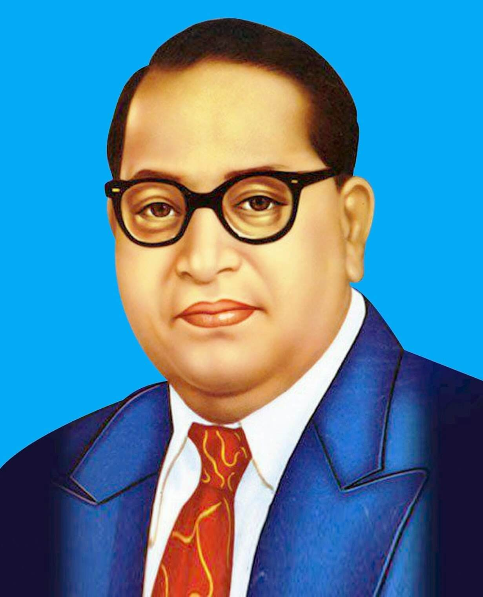

Dr.B.R.Ambedkar was born on 14 April 1891 in Mhow, Madhya pradesh. He was a renowed jurist, economist, politician, and social reformer who dedicated his life to fighting against social discrimination and promoting equality among all people.
Ambedkar was the chief architect of the constitution of India.His knowledge, leadership, and vision played a vital role in framing the constitution, which guarantees justice, liberty, equality, and fraternity to all citizens of the country.
Dr.Ambedkar strongly believed that education was the key to social progress and empowerment. His famous slogan, "Educate, Agitate, Organize,"continues to inspire people to seek knowledge, stand up for their rignts, and work together for a better society.
| Freedom Fighter | |
|---|---|
| Name | Dr.B.R.Ambedkar |
| Birth | 14 April 1891 |
| Education | Columbia university, London School of Economics |
| Children | Yashwant |
| Profession | Jurist, economist, politician, socialreformer, writer |
| Awards | Bharat Ratna in 1990 |
| Nickname | Babasaheb |
| Death | 6 Dec 1956 |